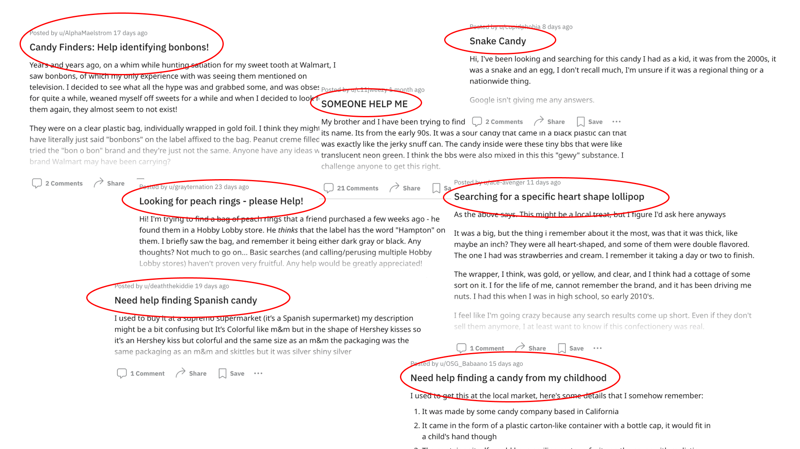
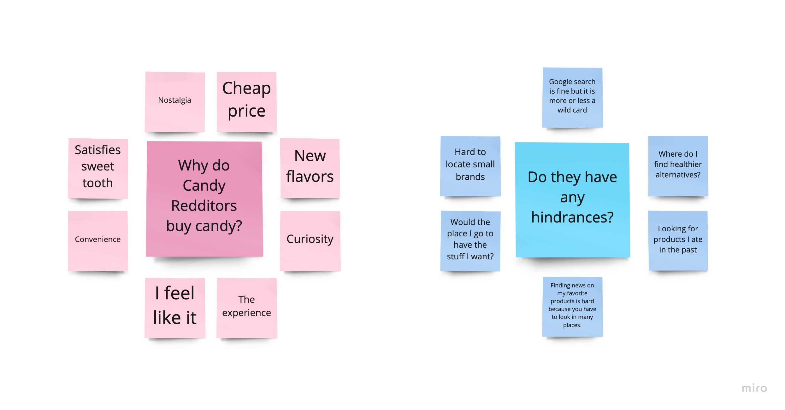
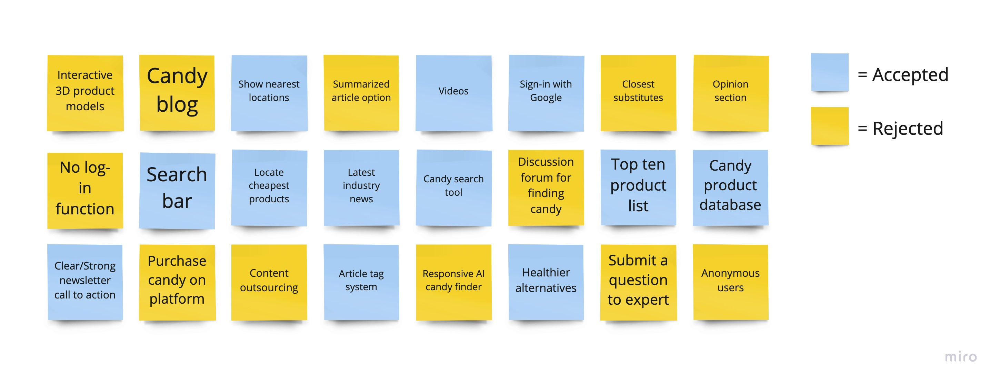
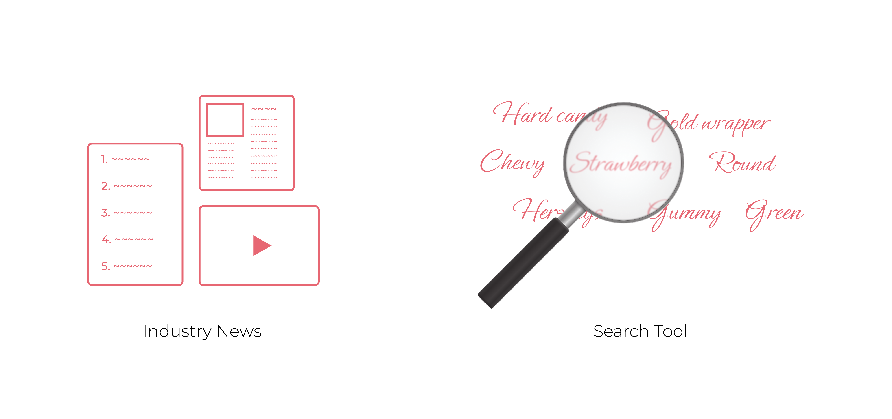
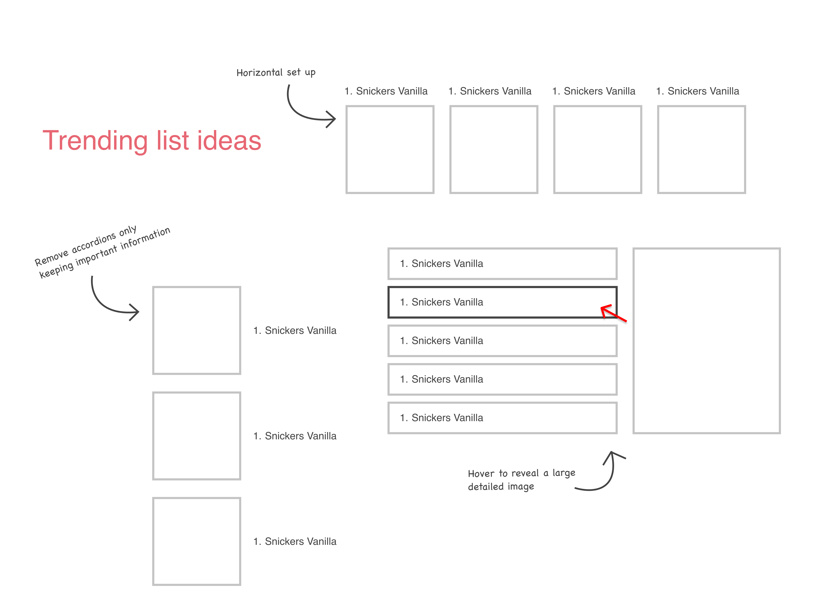
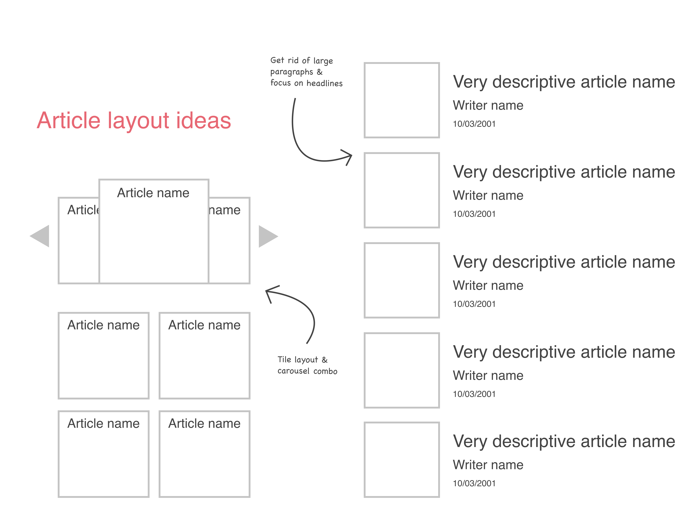

Jun - Aug 2021
Conceptual
2 Members
UX Designer
Market Research
User Research
Prototyping
Usability Testing
The Process
Objective Research Brainstorm Wireframe Feedback Challenges Prototype Testing ReflectionProject objective
I visit Candy-focused SubReddits a lot. Every time I do, I would see Redditors inquiring about their lost candy product after belting out the bits and pieces of information that they remember.
Other Redditors are curious about their favorite candies and want more information. Sadly, those types of posts typically gain little recognition or are ignored completely because most Redditors don't have the answers.
"How might we provide Candy-loving Redditors the ability to reunite with their forgotten candy products while fulfilling their curiosity of confectionery items?"
Competitive analysis
I conducted SWOT analyses on three existing solutions that target a similar audience (candy-lovers). The three sites include: Candy Industry, Candy Gurus, and Confectionery News.

Although candy news sites are niche, they have a loyal following due to having newsletters. However, some sites don't feature them prominently and/or without a strong call to action.
75 respondents and 23 interviewees
I conducted a survey to get an estimate of the percentage of community members who had forgotten a candy product that they liked. I also wanted to know the percentage of members who liked learning the background behind their favorite candy products.

After the survey, we interviewed 23 members mostly through messaging. Although my objective was to understand more about their thirst for candy knowledge and their thoughts on the lack of attention their posts recieve on the Reddit, I was open to learning more about their motivations such as why they buy candy as well as other hindrances.
My design goals
Designing around a solid goal will ensure that we are focused and don't design things that are not needed.

Originally, my only focus was to address the first design goal. However, after understanding the other painpoints of the Candy Redditors, I included a second design goal to appeal to more of the community.
Feature Brainstorm
My teammate and I brainstormed product functionality that would address the design goals. After which, we discussed which to incorporate into the product. Decisions were based on feasibility, risk assessment, and practicality.
The product's main features include providing users the latest candy industry news through various forms of media (articles, videos, top ten lists) and a search tool that would provide accurate results even if a vague description is the input.
Information architecture
I created a site map as a guide when I sketched the pages of the site. This ensured that I didn't leave out any features and gives me a road map of pages to create.

Sketches

Wireframes

Quick user feedback
To ensure the solution's user-friendliness, I presented the wireframes to five Candy Redditors to receive feedback before I started prototyping. There were two design choices that were less favored.
Annoying accordions
4/5 people didn't like the usage of accordions on the top five list because:
- It hides important information such as product name, rank, and image.
- Accordions seem too overwhelming for someone who just landed on the site.

Boring article layouts
3/5 people were unsatisfied with the article layout because:
- Nothing seemed interesting to interact with.
- There was a lot of reading before getting to the article itself.

The Challenge: Design-block
I had 2 tasks. I needed to redesign the top five list in a space-efficient manner while not overloading users on information. I also needed to make the article layout more lively and interesting.
 However, after various attempts, I struggled to find a suitable solution and me and my teammate were stuck (design-block). That was until I started looking at how existing products implemented their features.
A simplified list design
I considered many list designs and settled on Billboard's "The Hot 100" list because of good space-usage and information hierarchy in that users will see the rank first, followed by the images, and finally the product name and company.

A livelier article layout
The article layout of Eater was chosen because it fits the needs of our users. Eater features popular articles by having their thumbnails enlarged to empathize significance. The lack of a detailed description allows users to focus on the headlines, which Candy Redditors were heavily in favor of.

Prototype
Homepage
Upon landing on the site, Candy Redditors will see a carousel whose first slide is a newsletter call to action. I also made use of the awkward white space on the right side of the top five list. I filled it with a blurb that gave credibility to the list. Below that, an illustration was used to add more visual appeal to the page.

News page
The top portion of the news page has an assortment of tags that people can use to filter through the articles. Some article thumbnails are larger to indicate their importance as well as to generate interest.

Article page
Although the page is filled with stand-in content, the idea is that the length of the article wouldn't be too long. Longer articles decrease user attention. I also added some cards (above the comment section) displaying healthier options to meet Candy Redditor's needs.

Candy search page
Interacting with the search bar or the "Candy Search Tool" banner on the homepage would bring the user to the candy search tool. If users do not have an idea of the type of candy they are looking for, then they can start with using the filters to explore. If they need it, there are advanced filters that take in bits and pieces of information.

Candy product information page
If a particular product is featured on the top five list, an article, or the search tool results, the user would come across this page. The purpose is to provide users with additional information about a candy product such as, history, nearest and cheapest places to buy it from, and articles/videos where the candy was mentioned.

Usability testing
On completion of the prototype, my teammate and I conducted usability testing with several Candy Redditors and other people who like candy.

A common critique was accessing the candy search tool. It was not enough to have an entry through the "candy search tool" banner on the homepage and a search bar in the navigation. Thus, a fourth tab was implemented on the navigation.

Future plans
After usability testing, the project was put on hold. However, if the project does resume, I would conduct more testing to ensure the current prototype isn't outdated. After that, I would need to flush out the smaller details such as user log out, user location, and a no relevant search results screen.
The takeaway
Use inspiration to overcome design-block
By gathering design inspiration from existing web-products, I was able to find a solution that works for me and adapt it into my project.
Next Project